播客百问百答 2.0
做自媒体13年，做播客3年。这108个问题，是我被问烂的，也是我踩坑最多的。不废话，直接给答案。
v2.0 更新说明：本版在原100题基础上，注入了《CPA中文播客白皮书2026》与《2025小宇宙年度趋势报告》的最新数据，并新增第三章「行业专题·私域老板专属」8道针对性问题。结构已按"读者购买旅程"重新排序——先看能不能赚钱，再看怎么做。
我适合做播客吗？
播客是纯音频的长内容。你在跑步、通勤、做家务的时候，眼睛解放了，耳朵在工作——这就是播客的核心场景。
抖音需要你盯着屏幕，15秒逻辑，情绪驱动；小红书需要你翻图文，关键词驱动；播客是"陪伴型媒介"，听的人是主动选择给你30分钟甚至2小时的专注。
这意味着什么？意味着播客的听众质量，远高于刷到你的路人。他们更信任你，更愿意付钱。
能。
我身边做得最好的几个播客主理人，有人带着明显的四川口音，有人声音沙哑，有人语速极快。听众喜欢他们，不是因为声音好听，是因为说的东西有价值、有个性。
所谓"好声音"是播音腔的标准，不是播客的标准。播客要的是真实感和信息密度，不是主持腔。
当然，如果你真的想改善声音，有一些基础的录音技巧可以帮到你——这个我们在录制篇会详细讲。
理论上，一部手机、一个免费的剪辑软件就能开始。
但如果你认真想做，建议最低配置：
- 麦克风：200–500元的动圈麦，比手机收音好十倍
- 录音环境：家里最安静的房间，挂几件衣服就能降噪
- 剪辑软件：Audacity（免费）或GarageBand（Mac免费）
真正影响质量的不是设备，是你有没有想清楚说什么。
剪辑确实是很多人卡住的地方——不是因为难，是因为没有人教你"播客剪辑的思路"跟视频剪辑完全不同。
播客剪辑的核心不是特效，是：删掉废话，留下信息密度。
如果你想系统学播客剪辑，我开了一个播客剪辑营，从零基础开始，教你剪辑逻辑、降噪、多轨处理、发布流程，学完可以自己剪，也可以接单给别人剪。感兴趣可以加我微信 gaoqiantongxue（搞钱同学） 了解详情。
有，而且听众质量比你想象的高很多。
小宇宙APP用户过千万。网易云音乐、喜马拉雅、荔枝都有播客频道。苹果播客在中国也有一批忠实用户。
《CPA中文播客白皮书2026》对听众的画像：
| 维度 | 数据 |
|---|---|
| 平均年龄 | 32.2岁，核心用户21–35岁占65.7% |
| 学历 | 本科及以上89.9%，硕博占29.6% |
| 月均收入 | ¥14,160 |
| 城市分布 | 一线城市56.4%，新一线23.4% |
| 性别 | 女性64.2%，男性35.8% |
| 重度用户 | 55.2%每周收听超5小时，均9小时/周 |
这不是"流量大"的赛道，是"流量精"的赛道。500个这样的听众，比5万个刷短视频的路人值钱得多。
长度没有统一标准。10分钟的干货节目有人听，2小时的深度访谈也有人追。
关键是：你的内容类型决定长度。
- 干货教程型：20–40分钟
- 访谈聊天型：45–90分钟
- 个人碎碎念型：10–30分钟
更新频率建议：先保证质量，再谈频率。一周一更，坚持三个月，比冲刺两周然后断更有效得多。
我见过太多人开了头、消失了。播客最大的竞争优势，是坚持。
个人做播客，不需要营业执照。
但有几点要注意：
- 内容要符合平台规则和相关法规
- 涉及医疗、法律、金融等敏感领域，要谨慎表达
- 如果涉及广告合作，部分平台要求实名认证
普通的生活类、知识类播客，个人做完全没问题。先开始，遇到具体问题再具体解决。
这是我在私教里被问最多的问题之一。
先问自己三个问题：
- 我在哪个领域有超过普通人的经验或认知？
- 我身边有哪类人在问我问题？
- 我自己最想聊什么——哪个话题能让我聊一小时停不下来？
三个问题的交集，就是你的播客方向。
有必要，而且逻辑是反过来的。
短视频的流量逻辑是"被算法推给陌生人"；播客的逻辑是"被听众主动选择"。
两者不冲突，反而可以联动：用短视频引流，用播客深度沉淀。很多人的付费转化，发生在听了播客之后，不是看了短视频之后。
原因很简单：听你聊了30分钟，比看了你3条视频，信任深得多。
能，但不是靠流量本身。
播客变现的路径通常是：内容建立信任 → 信任转化成付费。
具体方式有：卖课、卖咨询、接广告、带货、见面会。我自己主要靠前两种。
但有一个真实情况要告诉你：播客的变现周期比短视频长，前三个月基本是投入期。耐心是做播客最重要的能力之一。
播客真的能赚钱吗？
五条路径：
- 分销合作：帮其他产品推广，赚佣金
- 自有产品：课程、咨询、社群——利润最高，也是我主要的收入来源
- 付费内容：付费节目、会员订阅
- 广告合作：品牌赞助，节目内贴片广告
- 见面会/线下活动：与听众线下连接，门票收入
五条路径各有适合的阶段。粉丝少但垂直的节目，适合自有产品；粉丝多且泛化的节目，适合广告。不要等到"粉丝够多"才开始变现——信任建立好了，500个听众就能开始。
没有明确门槛，但参考行情：
- 万粉以下：广告报价低（单集500–2000元），主动找品牌多
- 1–5万粉：单集广告2000–10000元，开始有品牌主动找你
- 10万以上：广告询价变多，可以有选择性地接
找广告主的方式：主动投递给你节目受众可能感兴趣的品牌；加入播客联盟或媒体投放平台；在节目里说"如果您有合作需求，欢迎联系"。
三个原则：
- 自己用过再推荐：推荐自己没用过的产品，听众能感觉到，会失去信任
- 广告内容化：把广告做成一个真实故事或体验分享，而不是念品牌方的推广文案
- 时间比例控制：广告时间不超过节目总时长的15%
最好的广告是：听完你根本不确定那是不是广告，但记住了那个产品。
可以，而且这个模式在快速增长。
但付费内容需要满足两个条件：你的免费内容已经建立了足够信任；付费内容有明显的额外价值（更深度、更专属、更早获得）。
从0开始就做付费内容，转化率会很低。建议先做好免费内容6–12个月，再引入付费。
播客卖课，最重要的不是"广告词"，是内容本身就是最好的广告。
方法论：
- 每期课程的"冰山一角"放在免费内容里
- 让听众在节目里感受到你的方法有效
- 偶尔讲学员案例，而不是直接讲产品
定价不是成本定价，是价值定价。
问自己：你能帮听众解决什么问题？这个问题解决了能带来多少价值？
参考思路：你的时间稀缺性；你的专业背景和成果；目标听众的付费能力。
不要因为"觉得自己还不够好"而压低价格。定价是一种态度，太低的定价有时候反而让人觉得不专业。
- 联合策划：和品牌共同策划一期或一系列节目，内容深度植入
- IP授权：允许品牌使用你的节目内容做二次传播，收取授权费
- 活动合作：品牌赞助你做线下见面会，双方共享曝光
- 分销合作：推广品牌产品，按销售额分佣
进阶的变现，核心是把你的节目当成一个"媒体资产"来运营，而不是只是"内容创作"。
短视频赚钱更快，播客赚钱更稳。
短视频一旦有爆款，流量和收益来得快；但也去得快，下一条可能就凉了。
播客的变现周期更长，但建立起来之后，转化率通常比短视频高——因为信任深度不同。
我自己的经历：做播客第一年没有广告收入，但私教产品的转化率，远高于我在短视频上投放的效果。
两个都做是最好的——短视频引流，播客沉淀和转化。
核心是：把内容变成资产，把听众变成用户。
- 建立内容库：历史优质内容持续被搜索、被发现，持续带来新听众
- 建立产品体系：从入门到深度，有不同价位的产品匹配不同需求的听众
- 建立社群：付费用户进入社群，社群里持续产生价值，降低用户流失
这条路我自己正在走。从开始到"有一定被动收入"，我用了大约18个月。
没有固定数字。
我见过粉丝不足1000人，却通过播客变现超过10万的案例；也见过粉丝数万，却几乎没有商业收入的节目。
关键不是粉丝数量，是听众对你的信任程度和你有没有匹配的产品。
500个高度信任你的听众，比5万个随机订阅者的变现能力强得多。
行业专题·私域老板专属
不会。这正是播客对这些赛道最大的价值。
小红书发医美内容会被限流；微信视频号发保险内容会被删帖；朋友圈发玄学会被举报。播客平台（小宇宙、喜马拉雅、苹果播客）不会。
原因：音频内容的审核机制和图文、短视频完全不同，关键词触发机制更宽松。而且你在节目描述里挂微信、留联系方式，平台不主动限制。
这就是为什么敏感赛道的人，播客是最合适的公域选择——这是你真正的自由阵地。
私域是在存量里转化，播客是在增量里建立信任。
私域里的人，是你已经认识的人。朋友圈发一百条，还是那一百个人看。播客是让陌生人主动找到你。
更重要的是：播客听众的质量，通常高于你现有私域的平均水平。
- 主动搜索"播客+你的行业"的人，本身就是有学习意愿、有付费能力的人
- 听完你30分钟播客的人，信任度约等于见过你几次面
- 他们进你私域的时候，已经是"半成交"状态
不讲干货，讲故事。不讲产品，讲客户。
最有效的三类内容：
- 客户案例：一个真实客户，遇到了什么问题，你怎么帮他解决的，结果如何（脱敏处理）
- 行业误区：你们这个行业里，客户最常踩的坑是什么
- 幕后故事：你做这件事的过程中，遇到过什么有趣的人或意外的事
这是最被低估的"一鱼多吃"玩法。一场高质量的嘉宾访谈，可以同时带来：
- 客户转化：嘉宾本人有可能成为你的客户，或介绍客户
- 代理资源：嘉宾在他的圈子里帮你传播，等于免费的分销渠道
- 品牌背书：行业知名人士愿意上你的节目，是隐性背书
- 内容传播：嘉宾把节目发到他的朋友圈/社群，你的内容触达他的受众
通常3–6期开始有问候，20–30期开始有稳定流量。
有一个加速器：嘉宾节目。你邀请的每一位嘉宾，会把这期节目发到他的受众里。如果前10期每期都有一位嘉宾，等于你的内容被10个人的私域推了一遍。这是最快的冷启动方式，没有之一。
高客单产品最适合用播客引流，这是播客的核心优势场景。
原因：高客单产品需要高信任。听众听了你10期播客，相当于对你进行了10轮"非正式面试"。他进你私域的时候，很多疑虑已经自己消化掉了。
你不需要一万个听众。一百个高度信任你、和你产品完美匹配的听众，就够了。
视频播客是趋势，但不是每个人现在都需要做。
建议：还没开始做播客，先做纯音频；已经做了30期+，考虑"录音时同步开摄像头"；内容本身需要视觉（PPT/操作演示/访谈面对面）：直接做视频播客。
2025年，81.7%的播客创作者已经在用AI，主要集中在三个环节：
策划环节（最值得用）：Claude/豆包——给一个话题，生成10个不同角度的选题；NotebookLM——上传行业资料，生成可以直接讲的播客脚本框架。
文稿/标题环节：Whisper（免费准确率高）、飞书妙记（国内好用）——录音转文字；标题优化——把你想到的标题扔给AI，让它出5个不同版本，你选最好的。
推广环节：把每期核心观点提炼成3–5条，直接发小红书/朋友圈；让AI把播客描述改写成适合小红书的"种草文案"风格。
不值得用AI做的：内容本身的核心观点、你的真实故事、你的个人判断。这些是你的护城河，也是听众关注你的理由。
找准定位
不是越细越好，是要"刚好细"。
太宽：《聊聊生活》——谁都能听，但谁都不会专门找你。太窄：《成都高新区28–32岁女性创业者的播客》——受众可能就几十个人。
好的定位是：说得清楚是给谁的，但受众足够多。比如"给想做副业的上班族讲变现方法"，这就是刚好细——清晰，但市场足够大。
可以，但要做好"统一人设"。
如果你的播客是"跟着我，体验一个真实创业者的生活"，那聊的话题可以很杂——创业、育儿、读书、旅行——因为线索是你这个人，不是单一话题。
最怕的是主题杂、人设也不清晰。听众不知道这个播客是干嘛的，就不会持续听。
在你想做的细分领域，找5–10个同类播客，听3–5期，记录下来：
- 他们在聊什么（内容角度）
- 他们没在聊什么（空白地带）
- 听众评论里在抱怨什么（需求未被满足）
差异化不一定是"没人做"，而是"同样的话题，你能给出不同的视角"。
不对。"所有人"等于没有人。平台的推荐算法需要你告诉它你是给谁的；听众也需要在第一秒判断"这个节目是不是给我的"。
明确一个核心听众画像：年龄段、职业、他们最烦恼的事是什么。这个画像越清晰，你的内容越有穿透力。
个人播客：主理人即品牌，核心是"人设"，有温度，听众跟的是你这个人。机构播客：品牌即节目，核心是"内容体系"，适合企业内容营销。
对于大多数想做自媒体的个人，选个人播客。原因：个人播客的信任成本更低，变现链路更短，你的真实经历本身就是内容。
好的播客名字：一听就知道聊什么或风格；好记、好搜索；不容易被同名节目淹没。
- 直接型：《槽边往事》《故事FM》《忽左忽右》
- 功能型：《得到头条》《商业就是这样》
- 人设型：当小时的《搞钱搞流量》
取名的误区：太文艺、太模糊，听完不知道这个节目是干嘛的。
有，而且很重要。播客封面是在所有平台的"门面"，要在小尺寸下清晰可识别。
- 尺寸：3000×3000像素
- 字要大：节目名必须在手机屏幕小图标下看清楚
- 风格统一：封面视觉要和你的人设一致
- 颜色对比强：浅底深字，或深底浅字
用Canva可以做出不错的封面，不需要设计功底。
建议至少录好3–5期再发。
- 前几期你会越做越好，有缓冲可以修改
- 新听众发现你时，能一次听多期，增加留存
- 防止发布后遇到突发情况断更
但不要等到"完美"才发布。做播客，开始比完美更重要。
可以修改，但成本不低。改定位意味着：部分老听众可能不再适合你的新方向，内容要重新调整，平台标签要重新建立。
建议：微调（比如从"泛商业"变成"创业女性商业"）可以直接调；大幅转型先在新方向做几期测试反馈，再正式切换。
定位可以进化，但要让听众感受到是"进化"而不是"抛弃"。
有，几个常见的"定位陷阱"：
- 太像教科书：内容正确但无聊，听众宁愿去看书
- 主理人没有立场：什么都说"要看情况"，听完什么都没记住
- 目标听众本来就不听播客：比如针对60岁以上老人的内容
- 完全照搬头部节目的风格：没有自己的独特性
好的定位，必须有一个回答："为什么是你，而不是别人？"
内容怎么策划
有三个稳定的来源：
一、听众问题库——你的评论区、私信、群里被反复问到的问题，就是选题。有人问说明有需求，有需求说明有听众。
二、自己的真实经历——你最近遇到了什么事？解决了什么难题？踩了什么坑？你的亲身故事，是最不可复制的内容。
三、行业热点的个人视角——不是追热点，是"这个热点让我想到了什么"。你的独特解读，才是价值所在。
三个来源轮流用，选题枯竭的问题基本消失。
最通用的结构是：钩子 → 主体 → 收尾。
- 钩子（前30秒）：告诉听众"你听完这期能得到什么"或者"这期有什么让人意外的内容"。前30秒决定听众要不要继续听。
- 主体：你的核心内容，2–5个层次递进的点
- 收尾：总结 + 行动建议，或者抛出下期悬念
不要把节目介绍放在最前面。没有人在前10秒想听你介绍自己。
可以，但要念出"说话感"，不是"播音感"。
建议：写稿子，但当"提纲"用，不要逐字照念。重要的数据、案例可以看稿，其他部分用自己的话表达。
长期来看，练习脱稿聊天才是播客的核心能力。
各有优劣，取决于你的内容定位：
单人播客：优点——时间灵活，质量可控，人设清晰；缺点——一直是自己的声音，容易单调，需要很强的表达能力。
双人对谈：优点——对话自然，节奏有变化，两个人的视角更丰富；缺点——协调成本高，嘉宾质量参差不齐。
如果你刚开始，建议先做单人，把表达能力练出来；稳定后引入嘉宾，内容会更有层次。
记住一个原则：开头是给还没被说服的人准备的。
几种有效的开头方式：
- 直接抛出冲突："我今天要聊一个让我亏了三万块的决定。"
- 给出承诺："听完这期，你会明白为什么大多数人的播客做不到100期。"
- 制造好奇："有一件事我做对了，但完全是因为做错了另一件事。"
不要用的开头：自我介绍、节目介绍、"欢迎来到xxx播客"。这些对已经是粉丝的人有效，对新听众完全无效。
加进去三样东西：
- 真实案例，最好是你自己的故事，不是"有个朋友"
- 情绪波动，你当时怎么想的、什么感受，说出来
- 不完美的细节，你犯过的错、有过的疑惑，比成功故事更让人信任
知识是可以被复制的，你的故事不可以。
可以，但要有策略。聊你有直接经历或深入研究的争议，不要聊你只是"感觉上"有看法的话题；表达立场，但给出理由；不要攻击具体的人，聊现象、聊逻辑。
"得罪人"有时候是好事——你有鲜明立场，才会有人真正喜欢你。没有立场的播客，听完什么都不记得。
不是哪种受欢迎，是哪种适合你。
最好的状态是两者结合：用故事带出干货，干货落地回故事。我自己的《搞钱搞流量》就是这个结构。
宁少勿多。一期播客，能把一个点讲透彻，比讲五个点都蜻蜓点水要好得多。
听众听完记住一件事，这期就成功了。大多数人做播客的毛病是"想说的太多"。练习做减法，是内容进步最快的方式之一。
连载内容的优势是留存——听众有理由持续回来。设计连载有几个要点：
- 每集独立：单集也能听懂，不依赖前情
- 系列有钩子：每集结尾留一个"下期预告"，让听众有期待
- 系列有边界：不要无限连载，给系列一个明确的结束点（比如"共5集"）
嘉宾邀约与访谈
先不要去邀请"最厉害"的那些人。做好两件事：
一、先从你真实认识的人开始。身边有没有在某个领域做得还不错的朋友？他们愿意跟你聊，内容质量未必差，而且信任基础已经有了。
二、降低对方的参与成本。准备好：节目介绍、本期聊什么、大概多长时间、发布后他们的权益是什么。让对方一眼看清楚参与这期有什么收获，对方才有动力答应你。
初期：用内容质量积累案例；中期：用案例吸引更好的嘉宾。这是正向循环。
一封好的邀约信包含五个要素：
- 你是谁（一句话，不要太长）
- 你的节目是什么（一句话，受众是谁）
- 为什么找这位嘉宾（具体化，不要"因为你很厉害"）
- 这期想聊什么（2–3个具体问题方向）
- 对嘉宾的好处（他们的内容/产品可以被推广，或者节目受众与他们匹配）
字数控制在200字以内。越短越好，对方越忙越要简洁。
你需要准备：提纲或问题列表（提前发给嘉宾）；对嘉宾背景的深入了解（不要现场才开始百度）；备用问题（如果某个话题聊完了，下一个话题是什么）。
请嘉宾准备：他们最想分享的1–2个故事或观点；他们愿意公开的联系方式（用于节目介绍）。
不要让嘉宾准备太多——他们时间有限，准备越复杂，爽约率越高。
至少要提前确认：
- 录制时间和方式（线下、线上、用什么工具）
- 内容方向和不聊什么（部分嘉宾有敏感话题不希望触碰）
- 发布时间（对方需要配合宣传的要提前告知）
- 内容使用权限（是否可以剪辑、改编）
几个应对方法：
- 追问法："能说得更具体一点吗？比如，你当时……"
- 故事法："有没有一个具体的事情，让你想起来这一点？"
- 反设法："如果没有做这个决定的话，你觉得会怎样？"
沉默不是失败，是嘉宾在思考。给他们一点时间，不要急着填满空白。剪辑时，大部分的停顿和废话都可以剪掉。
一个双赢的宣传方案：
- 发布前：给嘉宾发一张专属推广图（带节目封面和嘉宾名字）
- 发布时：给嘉宾一段简短的文案，可以直接发朋友圈/小红书
- 发布后：把嘉宾转发的内容点赞、互动，形成传播闭环
嘉宾帮你宣传，是最高效的冷启动方式之一。但这件事不会自动发生，需要你主动设计和推动。
最大的挑战是：内容质量波动大。
解决方法：建立严格的嘉宾筛选标准；提高你自己的访谈能力，让平淡的嘉宾也能说出好内容；保持主线统一——你提问的角度和方式要有一致性。
访谈类做到后期，你会发现提问能力比选嘉宾更重要。
做好备案：同一时间段手头有2–3个备用选题，随时能录单人内容。
嘉宾取消是常有的事，越高级的嘉宾越可能临时有变。更新要保持稳定，是播客留住听众最重要的事之一。哪怕质量略降，也要按时发布，比不发布好。
非常值得，而且往往比"大咖"更真实。《故事FM》里全是普通人，做到了行业顶级。
播客听众要的是真实的故事、真实的情绪，不是名人光环。选素人嘉宾的关键：他们的故事有没有特殊性，能不能让听众听完有共鸣或有启发。
要告诉嘉宾，不能偷偷植入。
如果嘉宾和广告是两件独立的事，把广告位放在节目前中后的独立段落，不要穿插进对话里——这样对嘉宾尊重，对听众也清晰。
录制技巧
三档配置推荐：
入门档（500元以内）——麦克风：BOYA BY-M1（领夹麦，200元左右）或手机 + 入耳式耳机；录音软件：GarageBand（Mac免费）或Audacity（全平台免费）；录音空间：衣橱或者挂满衣服的房间
进阶档（1500–3000元）——麦克风：Shure MV7 或 Rode PodMic；音频接口：Focusrite Scarlett Solo（如果用XLR麦）；简单声学处理
专业档（5000元以上）——播客专用动圈麦 + 声卡 + 专业棚处理
大多数人用进阶档就足够了。真正影响质量的不是设备，是录音环境。
- 时间选择：凌晨或清晨，噪音最低
- 衣橱录音：把麦克风架在衣橱里，四周的衣服就是天然吸音材料
- 关门闭窗：减少环境声传入
- 贴近麦克风：口型与麦克风距离15–20cm，背景噪音比例自然降低
用软件降噪是最后一步，不是第一步。先处理声学环境，再用软件修补剩余噪音。
五个小习惯，录音质量立刻提升：
- 喝一杯温水：润喉，减少嘴里的"噼啪声"
- 静音手机：通知声会毁掉一整段
- 关掉风扇/空调：连续的背景噪音很难后期处理
- 做15秒环境噪音录音：方便后期降噪用
- 提前看一遍提纲：说话更流畅，废话更少
最简单的方法：停顿两秒，重新说。
不要急着道歉或者解释，那些都是废话，后期剪掉很麻烦。两秒停顿在音频里会形成一个明显的"波形空白"，剪辑时一眼就能找到，直接删掉前面的错误版本，留后面说对的就行。
- 口水声：喝水、吃一小片苹果或脆的食物（刺激唾液分泌均匀）
- 唇齿音过重：麦克风不要正对嘴唇，偏向一侧或斜角放置
- 爆破音（p/b音）：加防喷罩，或麦克风斜放
线下：最好每人一个麦克风，分开录制成不同音轨，后期混音；如果只有一个麦，保持相同距离，中间放麦克风。
线上（远程对谈）：用Zencastr或Riverside.fm，每人本地录制，质量远高于录Zoom实时音频；备用方案：各自用录音软件录本地音频，后期对齐。
实时标记：录音时发现有好内容，暗中打一个标记；说错了，拍一下桌子——波形上会出现一个尖峰，很好找。
粗剪先删大段：剪辑时先过一遍，把明显无用的大段直接删除，再做精剪。不要从头到尾一秒一秒地听。
太快：有意识地在每个句子后面停顿0.5秒，说完一个意思再说下一个。不是放慢语速，是增加"呼吸感"。
太慢：可能是因为没想清楚就开口了。多准备，少即兴。提纲越清晰，表达越流畅。
完全正常，几乎所有人都有这个阶段。
原因是：你平时听到自己的声音，是骨传导的，和麦克风收到的空气传导声音不一样。怎么过这一关：坚持录制、坚持回听，大约3–6个月后，你会开始觉得自己的声音"还行"。
首推 Riverside.fm 或 Zencastr，原因是：它们让双方各自在本地录制高质量音频，不是录制网络传输的压缩音频。哪怕网络卡顿，本地录音不受影响。
最差方案（尽量避免）：直接录制腾讯会议/Zoom的实时音频——网络质量直接影响录音质量，且无法后期修复。
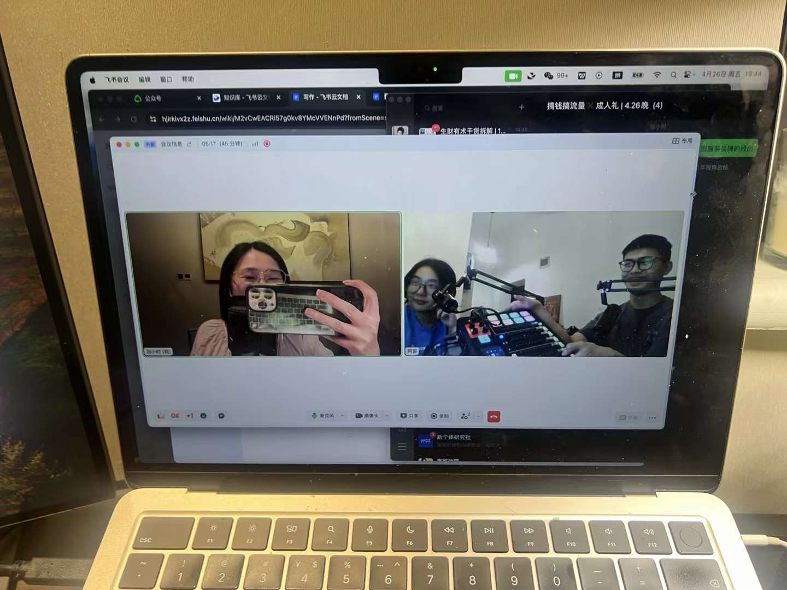
剪辑技巧
核心区别：视频剪辑在乎"视觉流畅"，播客剪辑在乎"信息密度"。
播客剪辑的三个核心任务：1. 删废话——口头禅、重复表达、过长的停顿；2. 调节奏——让内容听起来有张弛；3. 保真实——不能剪到失去真实感，剪辑痕迹太明显会让听众出戏。
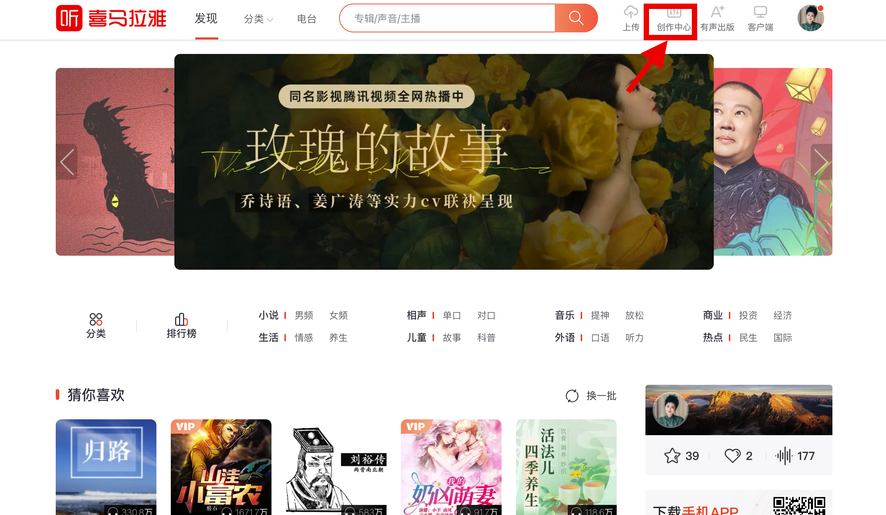
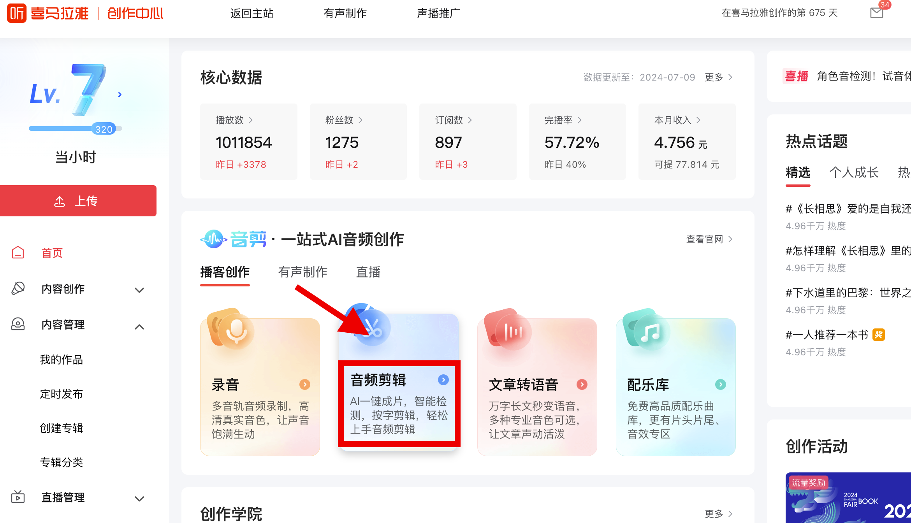
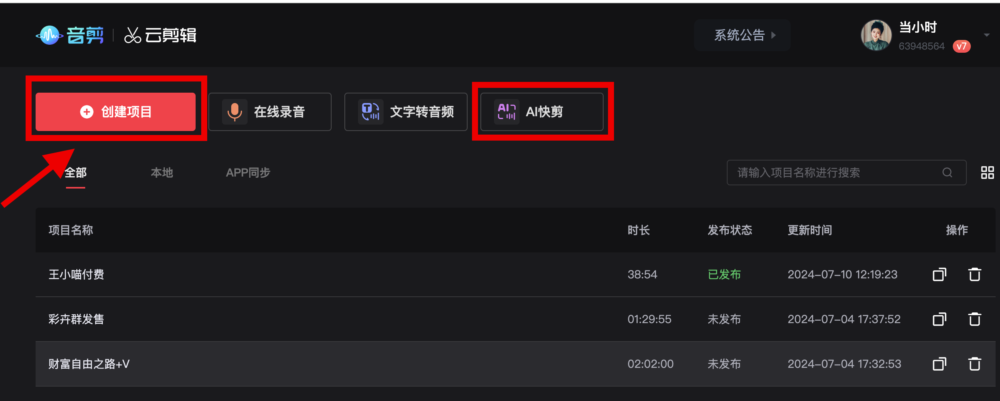
免费：Audacity（全平台，功能完整，适合入门）；GarageBand（Mac，界面友好，多轨支持好）
付费：Adobe Audition（专业功能强，学习曲线较陡）；Logic Pro（Mac，一次性买断，功能强大）；Hindenburg（专门为播客/广播设计，上手快）
入门阶段用Audacity或GarageBand完全够用。不要因为软件不够高级而推迟开始。
以下内容基本上可以全删：
- "啊、那个、就是、然后"等口头禅（偶尔留一两个，太刻意删除反而不自然）
- 超过1.5秒的无意义停顿
- 重复说了两遍的同一句话（保留更好的那次）
- 在录制开始和结束时的闲聊（除非内容有趣）
- 明显的技术问题段落（杂音、打断、麦克风碰撞声）
留什么：笑声、轻微的停顿感（让人觉得真实）、对话里自然的情绪流露。
初学者：3–5倍录音时长，即3–5小时。有经验后：1–2倍，即1–2小时。熟练后：可以低于录音时长。
影响效率的关键：录音质量越好，剪辑越快。废话少的录音，剪辑时间能减少一半。
最基础的流程（以Audacity为例）：
- 录一段15–30秒的"环境噪音"（没有说话的安静录音）
- 选中这段噪音，用"降噪"功能获取噪音特征
- 全选音频，应用降噪
注意：降噪不能过度，过度降噪会让声音出现"金属感"或"水下感"。调低参数，保持自然。
进阶方案：iZotope RX（付费，业界最好的降噪工具，有限额免费版）。
- EQ均衡：低切（80–100Hz以下），减少低频轰鸣；适当提升3–5kHz区域，让声音更清晰
- 压缩（Compressor）：让大声和小声的音量差距缩小，整体听感更稳定
- 轻微混响：加一点点房间感（非常小的量），干声会更自然
这三步处理，基本上可以让普通麦克风的录音质量提升一个等级。
发布前的检查清单：
- 开头有没有太长的沉默或杂音
- 音量是否稳定（-16 LUFS是通用标准，推荐用Auphonic自动校准）
- 片头片尾是否加了
- 节目信息（标题、描述、分章节）是否填写完整
- 用耳机完整听一遍（不能只听局部）
完全可以。播客剪辑是一个真实存在的外包需求。很多播客主理人不会剪、不愿意剪，愿意付费外包。
行情大致是：单期剪辑100–500元，取决于时长和复杂度。做得好的剪辑师，月收入做到5000–20000元完全可能。
短期内不会，长期会改变但不是取代。
目前AI工具能做到：自动删除停顿、基础转录、自动章节标注。AI做不好的：判断哪句话有价值、理解上下文逻辑、保留自然情绪的流露。
善用AI工具的剪辑师，会比完全手工操作的人效率高一倍，但不会被完全替代。
发布标准格式：MP3，码率128–192kbps，44.1kHz，单声道或双声道均可。
为什么是MP3？文件小（一小时约55–85MB），节省平台存储和听众流量；所有平台和播放器兼容。
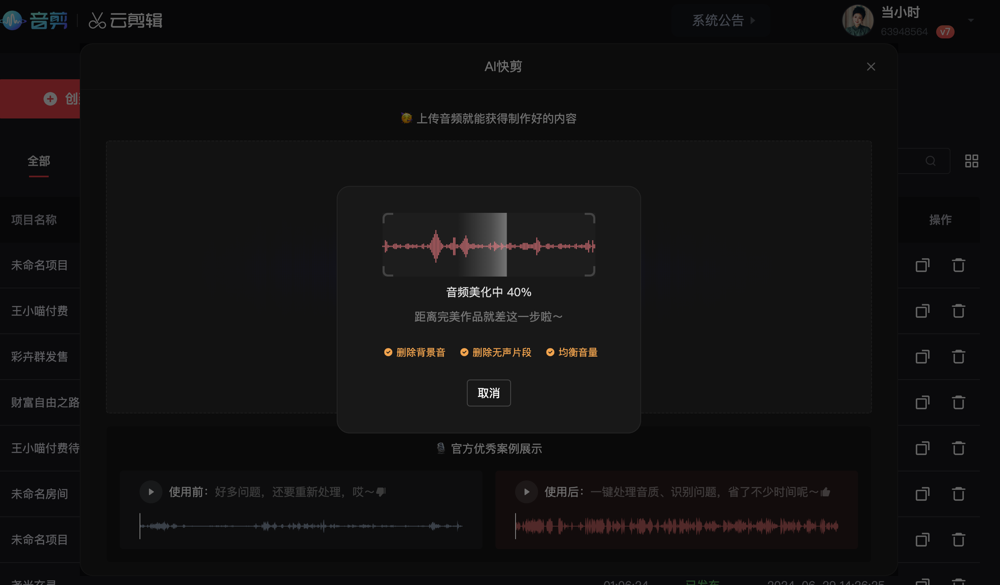
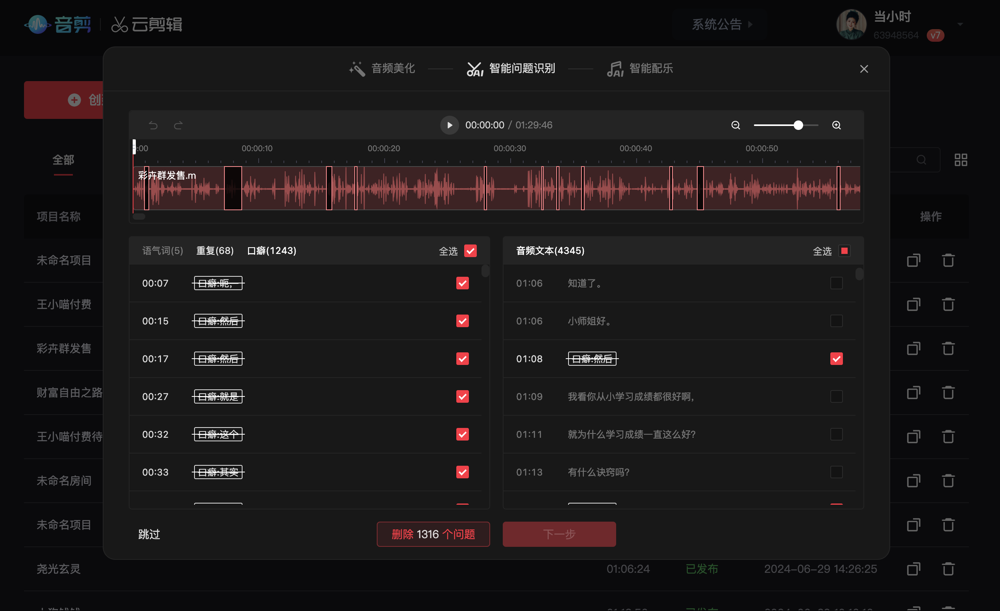
发布与运营
主要平台：
国内：小宇宙、网易云音乐、喜马拉雅、荔枝FM、苹果播客
国际：Spotify、Apple Podcasts、YouTube Podcasts
建议新手重点维护1–2个主平台，在听众聚集和你内容调性最符合的平台深耕。国内做中文播客，小宇宙是当前最活跃的播客社区。
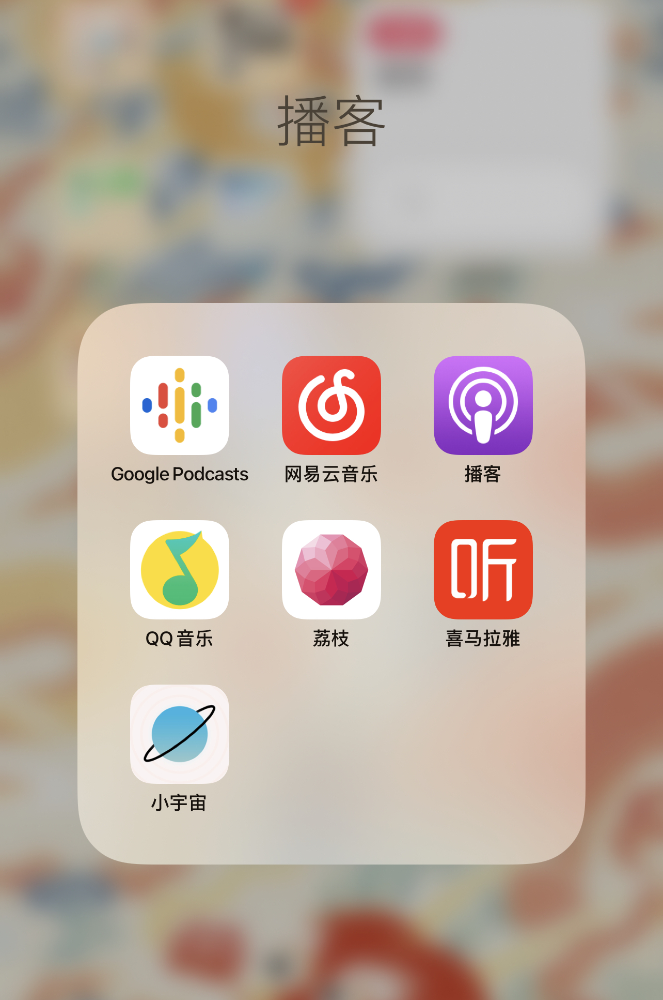
节目描述要做两件事：
1. 让算法找到你（SEO角度）——把你的核心关键词写进去，比如"播客创作者、副业、自媒体、变现"——这些词是听众搜索时会用到的。
2. 让人想点进来（读者角度）——说清楚：这期讲什么→你能得到什么→为什么这期不一样。
不要写"第xx期节目，今天跟大家聊……"，这是写给自己看的；要写"如果你正在考虑做播客，这期讲了一个大多数人都没意识到的启动误区"。
有必要，尤其是60分钟以上的节目。章节标记让听众可以跳到感兴趣的部分，提升收听体验。
00:00 开场 03:20 为什么大多数人的定位是错的 12:45 三步找到你的播客方向 28:10 案例分析
标题 > 封面。
封面决定"是否看起来专业"，标题决定"是否值得点击"。好标题的要素：
- 有具体信息（不是"聊聊创业"，是"我创业失败3次学到的教训"）
- 有情绪钩（好奇、共鸣、意外）
- 不超过20个字（手机显示会截断）
强烈建议做。只有音频的内容，在小红书、公众号、微信朋友圈无法传播。
不需要全文整理，可以是：3–5条金句截图；一张嘉宾观点的总结卡片；一篇600字的文字版干货摘要。
同样一期内容，做了图文二次传播的，播放量通常比只发音频高出50%以上。
没有固定标准，但有一个原则：定好了就要守住。
新手建议：每两周一期，给自己足够的准备时间，保证质量。等流程熟了之后，再考虑加速到每周一期。
前20期"没人听"是正常状态，不是失败。但这不意味着放弃，而是要主动做冷启动：
- 私信推荐：把相关的期次推荐给真的可能感兴趣的人（不是群发，是精准推荐）
- 跨平台引流：用小红书/微信公众号/朋友圈，每期做一条推广内容
- 互听互推：在播客社群里，和其他主理人互相推荐
全部回，尤其是前期。评论和私信是听众与你建立连接的时刻，也是播客算法判断活跃度的信号。
回复时：不要只回"谢谢"，加一句有实质内容的回应；把好问题留作下期选题；对于质疑，真诚回应比防御更有力。
最重要的三个指标：
- 完播率：听众听完一期的比例。低于50%要检查内容或开头钩子
- 订阅转化率：听了一期后订阅节目的比例。反映内容是否让人"想听下一期"
- 来源渠道：听众从哪里来。帮你判断哪个引流渠道最有效
不要过度关注播放量。早期播放量低是正常的，完播率高说明内容质量好，这才是核心。
建议做，但要认真做，不要有了群但没有运营。
不要创建完就丢着不管——没有活跃度的群，比没有群更损害你的品牌形象。
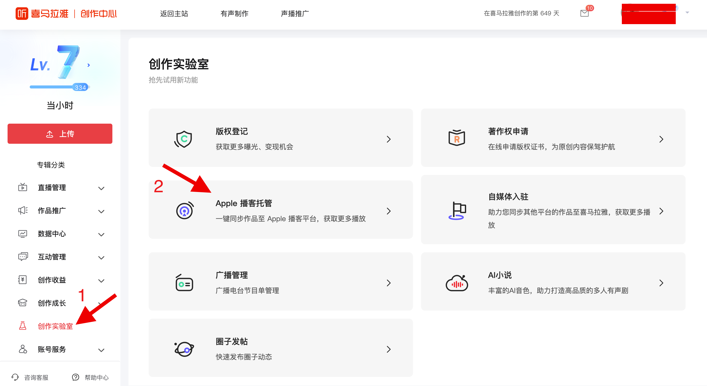
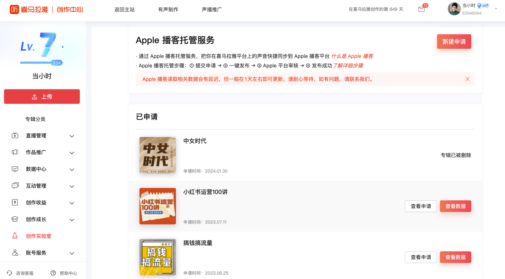
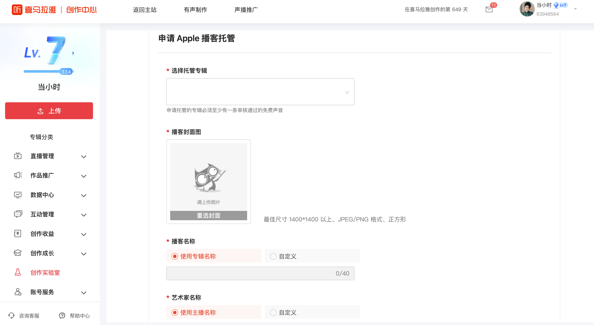
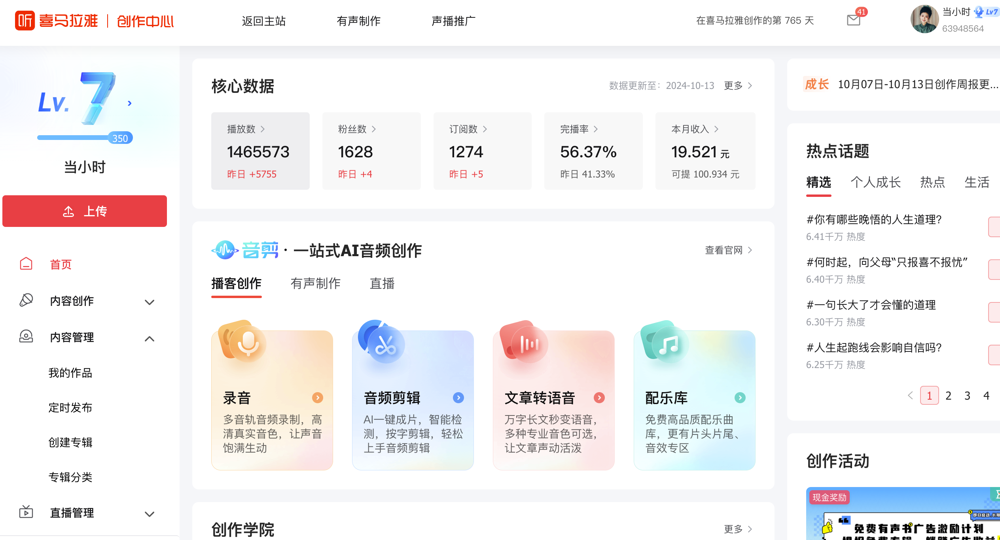
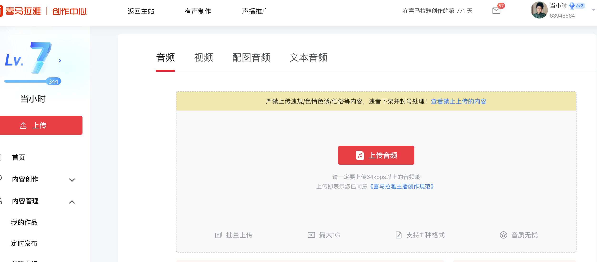
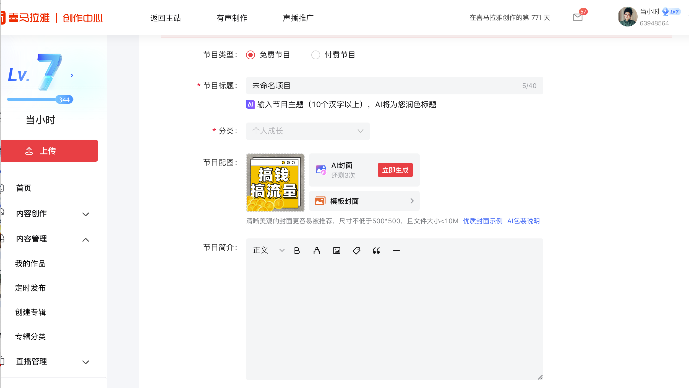
涨粉与增长
"快速涨粉"的方法存在，但不稳定；"慢速涨粉"的方法更可靠。
相对快的方式：上小宇宙或苹果播客的推荐榜；被其他大播客主理人推荐；某一期内容在小红书/微博上爆了。
慢但稳的方式：每期认真做，内容质量持续提升；嘉宾带流量；跨平台内容联动，持续曝光。
- 完播率和互动率：听众听完率高、评论多，算法会认为你的内容质量好
- 发布稳定性：定期更新的节目比断更节目更容易被推荐
- 新节目红利：小宇宙对新节目有一段推荐期，新开的节目要抓住前几期
- 主动申请：小宇宙等平台有"联系小宇宙"入口，质量好的节目可以主动申请推荐位
互推的基础：受众有重叠，但内容不重复。最有效的互推形式是互做嘉宾——你去对方节目做嘉宾，对方来你节目。
强烈建议同步。小红书是目前最适合播客引流的图文平台。
做法：把每期播客的金句或核心观点做成小红书图文；放上小宇宙收听链接（小红书允许放）；发布时间比播客正片晚1–2天，作为"二次传播"。
听众主动推荐，需要你给他们"理由"和"工具"。
理由：你的内容让他们有"一定要告诉朋友"的冲动——强烈的情绪共鸣、意外的观点、解决了他们一直苦恼的问题。
工具：简单好记的节目名（说出来就能被找到）；一句话介绍（让听众转述时有话说）；分享有奖（比如评论区留言有机会得到福利）。
新手阶段不建议。原因：花钱引来的流量，留存率取决于内容质量。如果内容还没稳定，投再多推广，听众来了也不会留下。
先把内容做好、完播率提上来，然后再考虑付费推广。
- 快速准备"新听众欢迎内容"：一期专门面向新听众的"入坑指南"，告诉他们从哪里开始听
- 更新自我介绍和节目描述：确保新来的人一眼看懂你的播客是干嘛的
- 留住新听众：在接下来2–3期内发高质量内容，抓住这批新听众转化成固定订阅者
流量来了不承接，等于浪费机会。这个窗口期大约只有72小时。
先问自己几个问题：你有没有持续做了至少30期？完播率有没有超过50%？你有没有做过任何主动的推广和引流？
"播放量不涨"和"应该放弃"中间，还差很多步骤。很多好的播客，都在第30期之后才开始爆发。
- 建立社群：微信群或小宇宙听友会，让老听众之间互相连接
- 点名感谢：偶尔在节目里提到听众的留言或故事，被提名的人会有强烈的归属感
- 让听众参与内容：征集选题、问题、故事——听众参与越深，越难离开
我有一个在网易云音乐关注我7年的听众，后来成为了我的付费学员。不是因为我做了什么特别的事，只是一直在做，一直在更新。
没有固定数字。关键不是粉丝数量，是听众对你的信任程度和你有没有匹配的产品。
500个高度信任你的听众，比5万个随机订阅者的变现能力强得多。
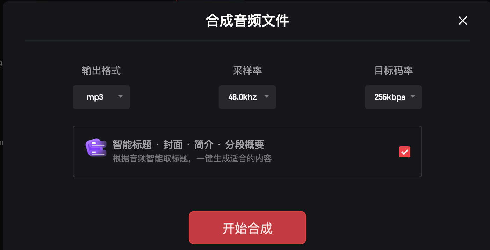
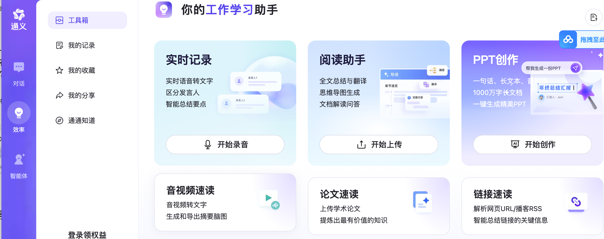
心态篇
完全正常。绝大多数播客在前30期都处于"只有自己知道的阶段"。
评判前10期的标准，不应该是"有多少人听"，而是：我有没有在进步？我有没有弄清楚自己要说什么？我能不能做到比上一期更好？
前10期是给自己的练习，不是给世界的表演。
能，而且大多数时候都可以找回节奏。
回来的第一期，可以直接聊"我去哪了"——诚实地说明断更的原因，反而会让听众更有连接感。很多人在听到主理人说"我最近很难熬"之后，变成了更忠实的支持者。
断更不是罪，不回来才是真正的放弃。
先确认你看到的是不是真实的。很多播客的"快速增长"背后，是资源、团队、已有粉丝基础的支撑。用你的第1年和他人的第3年比，数据上当然会有差距。
做播客的最大意义，有时候不是影响很多人，而是深度影响少数真正需要你的人。
有，当然有。我在做播客第一年，也有过好几次"下期要不要停更"的念头。录音累，剪辑累，发布后没什么反响，更累。
让我坚持下来的，不是某个神奇的动力，而是一个简单的问题：如果我明天停更，我会后悔吗？
大多数时候，答案是"会"。有时候坚持做一件事，不需要理由，需要的是"不停下来的惯性"。
都这样，真的。公开发内容就意味着接受评价。
区分"有效的批评"和"无效的攻击"：有效批评——指出具体的问题，你能从中学到东西→认真对待；无效攻击——泛泛的否定、人身攻击→不需要回应，删除即可。
在意那些真正关心你的人的反馈，对无效噪音建立免疫力。
能。播客不是脱口秀，不需要幽默；也不是演讲，不需要慷慨激昂。播客需要的是：真实、清晰、有信息价值。
你最大的优势，不是模仿别人，是做自己。
发出去。
"不够好"会一直有，即使做到第500期，你还是会觉得某期没达到自己的标准。
区分"真的需要修改"和"只是不自信"：有具体的问题（内容错误、声音有严重杂音）→修改；只是觉得"好像可以更好"→发出去，下期改进。
等待完美是最贵的沉没成本，它以"时间"为代价。
- 批量录制：一次录好2–3期，减少高频打扰正常生活的次数
- 固定时间：每周固定一个"播客时间"，让身边人知道这段时间是你的工作时间
- 提高效率：剪辑流程标准化之后，时间投入会大幅减少
长期来看，播客如果能带来收入，就更容易在家庭里获得支持。
一个词：长期主义。
不是熬时间，而是在正确的事情上不断积累。
这13年，我见过很多人追热点追得很猛，结果平台没了、算法变了，一切归零。也见过一些人慢慢做，内容和信任在积累，越来越值钱。
播客对我来说是第一个"不依赖算法推荐、只靠内容本身建立信任"的平台。听众订阅了你，就会一直在，不会因为某一天你没更新就消失。
先开始，再变好。
不要等设备更好、声音更好听、内容策划更完善。
我2023年开始做播客的第一期，设备普通，内容也不算成熟。但那一期上线后，有一个在网易云音乐关注了我七年的听众，在评论里说：
"终于等到你的播客了。"
那一刻我才意识到，有人一直在等你。
你不需要等到完美，你只需要出发。
读完了？
下一步，一起做出来
这108个问题是地图，但走路还得靠自己。如果你想要一个人陪着你从第一期做到第一笔收入，加我微信聊聊。
播客私教
1年深度陪跑，不限次1v1 + 专属档案 + 社群 + 训练营复训 + 线下见面
播客剪辑营
从零学播客剪辑，自用或接单都可以。工具 + 定价 + 接单全流程